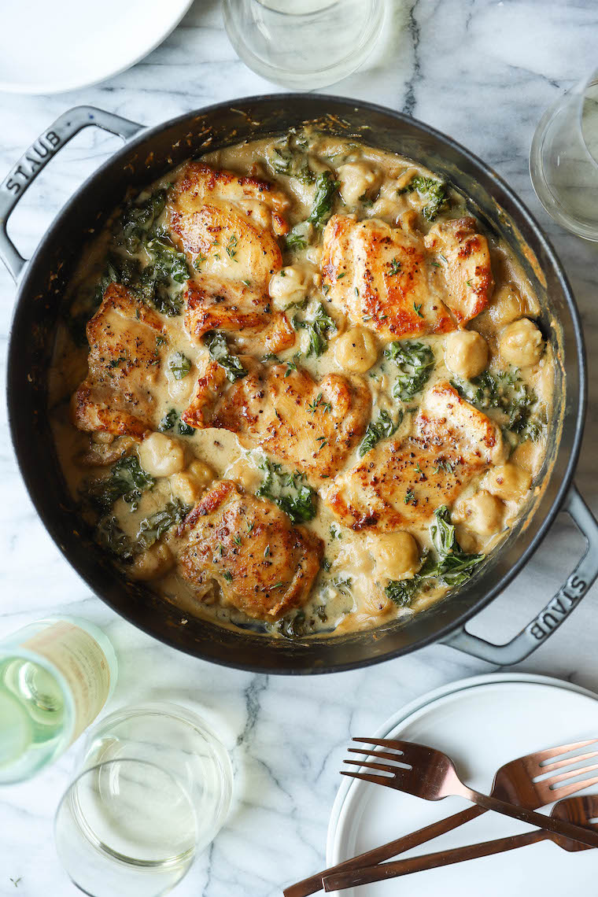

Creamy Chicken and Gnocchi

Description
Hearty, cozy, and super easy to whip up. Includes soft-pillowy gnocchi, a garlicy cream sauce,
and tender, juicy chicken thighs.
Ingredients
- 1 16-ounce package of cauliflower potato gnocchi
- 1 1/2 lbs boneless, skinnless chicken thighs
- Kosher salt and freshly ground black pepper to taste
- 5 Tbsp unsalted butter, divided
- 1 medium shallot, diced
- 3 cloves garlic, minced
- 2 tsp chopped fresh thyme leaves
- 3 Tbsp all-purpose flour
- 1 1/4 cup chicken broth
- 1/4 cup dry white wine
- 1/2 cup half and half
- 1 bunch kale, stems removed and leaves torn into bite-sized pieces
- 1/2 cup freshly grated parmesan
Steps
- Preheat oven to 400 degrees F.
- In a large pot of boiling water, cook gnocchi.
- Season chicken with 3/4 tsp salt and 1/2 tsp pepper.
- Melt 2 Tbsp butter in a large skillet.
- Add chicken to the skillet in a single layer and cook until golden brown.
- Melt remaining 3 Tbsp butter. Add shallot and cook until tender.
- Whisk flour until lightly browned.
- Whisk in chicken broth and win until thickened.
- Stir in gnocchi and kale until kale is wilted.
- Place into oven and bake until bubbly, about 10-12 minutes.
- Serve immediately.